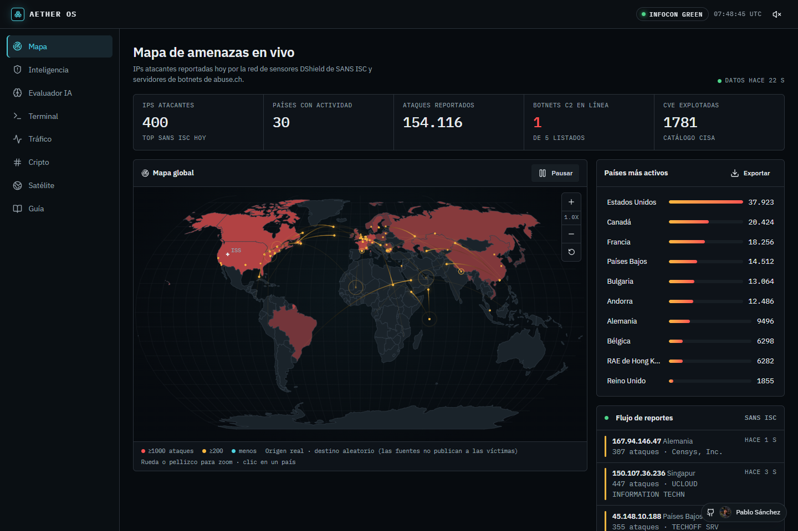
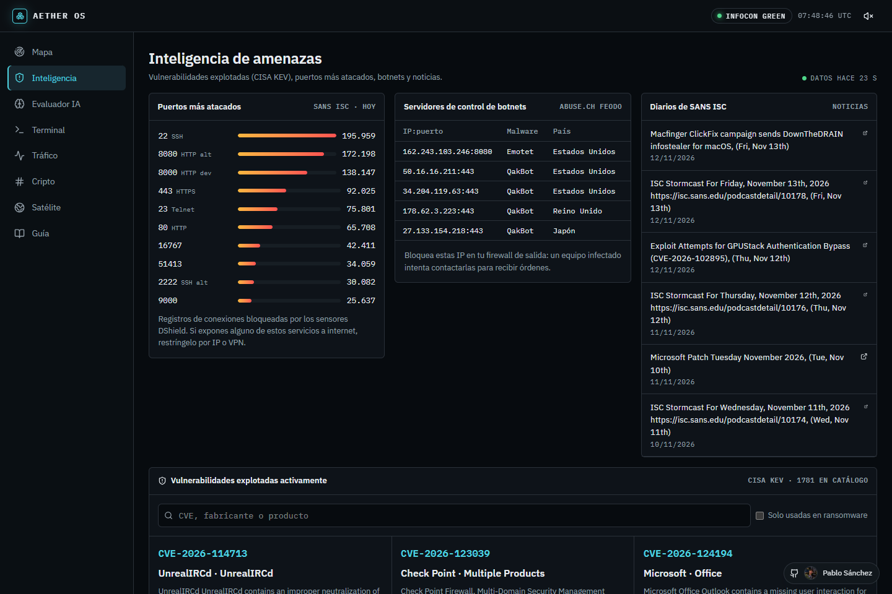
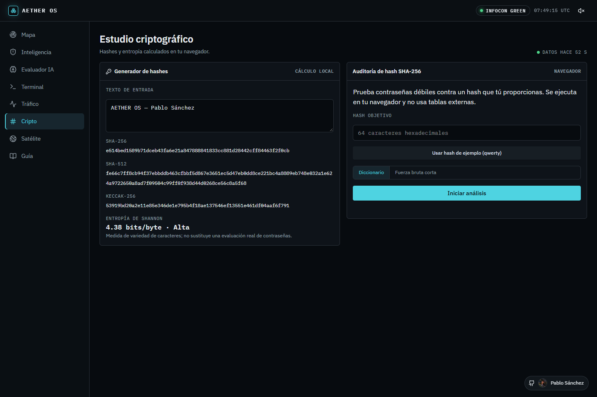

AETHER OS
Panel educativo de ciberseguridad defensiva · Educational defensive cybersecurity dashboard
Código y README / Source and README
Español
AETHER OS reúne reportes públicos de SANS ISC, CISA y abuse.ch. Sus módulos incluyen un mapa de actividad reportada, un catálogo de vulnerabilidades, consultas DNS y herramientas criptográficas locales.
Esta página presenta el proyecto. Para abrir el panel interactivo y consultar datos actualizados, ejecuta la aplicación con los pasos de instalación.
English
AETHER OS brings together public reporting from SANS ISC, CISA, and abuse.ch. Its modules include a map of reported activity, a vulnerability catalog, DNS lookups, and local cryptography tools.
This page presents the project. To open the interactive dashboard and query current data, run the app using the setup instructions.
Capturas / Screenshots

